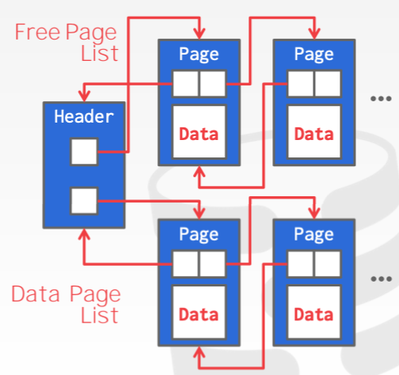
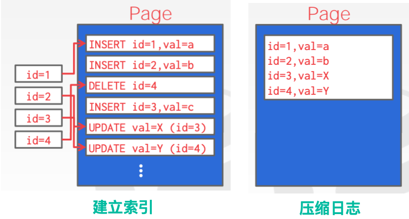

Database Storage I
约 5019 个字 预计阅读时间 17 分钟
存储¶
我们将重点讨论“面向磁盘”的DBMS体系结构，它假定数据库的主要存储位置在非易失性磁盘上。
（CPU寄存器、CPU缓存、内存、固态硬盘、硬盘、网络存储）
易失性存储设备：
- 易失性：断电后数据就会丢失
- 支持快速 随机访问 与 字节寻址 ，则程序可以跳转到任何字节地址并得到那里的数据
- 出于我们的目的，我们总是将这个存储类称为 内存
非易失性存储设备：
- 非易失性：存储设备无需连续的电源来保持它所存储的比特
- 更适合 顺序访问 （同时读取多个数据块）
- 块/页寻址 。这意味着为了读取特定偏移量的值，程序首先必须将 4KB 页加载到存储程序想要读取的值的内存中
- 称为 磁盘 。我们不会对固态存储(SSD)和旋转硬盘(HDD)进行(主要)区分
Info
还有一种新的存储设备即将问世，叫做 非易失性存储器。这些设备被设计为两个世界的最佳：几乎与DRAM一样快，但具有磁盘持久性。我们将不涉及这些设备。
对这门课中我们要谈论的大部分算法或者方法，我们并不在意它们是用于易失性存储还是非易失性存储。join除外，对join而言按顺序访问非常重要
由于系统假设数据库存储在磁盘上，而系统不能直接对磁盘上的数据进行操作，所以DBMS的组件需弄清楚如何在非易失性磁盘和易失性内存之间来回移动数据。
我们将 重点关注如何隐藏磁盘的延迟 ，而不是关注寄存器和缓存的优化，因为从磁盘获取数据非常慢。
面向磁盘的DBMS概览¶
面向磁盘的数据库管理系统：
- DBMS假设数据库的首要存储位置在 非易失的磁盘 上
- DBMS的组件管理数据在 非易失性存储 和 易失性存储 之间的移动
数据库全部位于磁盘上，数据库文件中的数据被组织为 页 ，第一个页是 目录页。为了对数据进行操作，DBMS需要将数据存入内存。它通过一个缓冲池来管理磁盘和内存之间的来回移动。DBMS也有一个执行引擎来执行查询。执行引擎将向缓冲池请求一个特定的页面，缓冲池将负责将该页面放到内存中，并向执行引擎提供一个指向内存中的页面的指针。缓冲池管理器将确保在执行引擎对该内存进行操作时页面在那里。
之所以要构建面向磁盘的数据库管理系统，是因为我们希望能支持比一台机器上可用的内存量更大的数据库。
DBMS VS. OS¶
DBMS的一个高级设计 目标 ：给应用程序一种错觉——我们能提供足够的内存将整个数据库存入内存中。
由于磁盘的读/写开销很大，而我们不希望从磁盘存取数据时出现大的停顿，从而降低其他所有东西的速度。因此，我们希望DBMS在等待从磁盘获取数据时能够处理其他查询。（有一系列技巧，如 允许在同一时间运行不同的线程或者不同的查询、缓存数据、提前计算某些数据 等）
这个高级的设计目标就像 虚拟内存，其中有一个很大的地址空间和一个让操作系统从磁盘导入页面的地方。
实现虚拟内存的一种方法： 使用mmap 内存映射文件 将文件的内容映射到进程的地址空间，进程在地址空间上读取，操作系统负责在磁盘和内存之间来回移动页面。 然而，如果mmap遇到page fault，那么这个进程将会被阻塞（操作系统要将page从磁盘load到内存）。
如果我们的数据库只需要读取数据的话，使用mmap实际上是可行的，但是问题在于我们并不仅仅需要读。如果有写操作，那么操作系统是不知道哪些page需要在其他page执行前从内存刷到磁盘上的，这将会与日志与并发控制的实现有关。
我们也可以通过一些指令来指导操作系统进行page的替换：
- madvise ：告诉操作系统何时你计划阅读某些页面。
- mlock ：告诉操作系统不要将内存范围交换到磁盘。
- msync ：告诉操作系统将内存范围刷新到磁盘。
出于正确性和性能的考虑，我们 不建议在DBMS中使用mmap 。
尽管使用mmap系统将具有操作系统可以提供的功能，但让DBMS实现这些过程本身可以提供更好的控制和性能（以正确的顺序将脏页刷到磁盘，更好的预取、buffer 替换、进程/线程调度策略）。
数据库存储¶
关于 数据库存储 ，我们必须关心的问题主要有两个：
- 如何使用磁盘上的文件表示数据库（如何在一系列页pages上组织数据库，如何将这些页存储在文件中，页中的tuple怎么样的。）
- 如何管理内存以及在硬盘间来回移动数据
最基本的形式中，DBMS将数据库以文件的形式存储在磁盘上 。有些可能使用文件层次结构，有些可能使用单个文件（例如SQLite的db文件）。
操作系统不知道这些文件的内容。只有DBMS知道如何破译它们的内容 ，因为内容是以特定于某种DBMS的方式编码的。（这些文件是专属于某个特定DBMS的）
数据库文件通常存放在操作系统提供的**文件系统** 中，我们基于操作系统的文件系统所提供的基本读写API来对文件进行读写。
DBMS的 存储管理器 负责维护磁盘上的数据库文件。它将文件组织为page的集合。它还可以跟踪page上的所有读取/写入操作，以及页面中还有多少空闲空间。有些系统会要求page是自包含的，这意味着阅读每个page所需的所有信息都存在page本身，这使得page出错时能尽可能容灾恢复。
Info
某些高端数据库系统实际上在文件系统之上会有一个shim层，它允许数据库去做一些磁盘调度，这就像是可以通过一堆线程来对彼此邻近的区块进行写入，我也可以将这些块合并，并做一次写入请求。操作系统也可以做到这些事情，但操作系统并不知道在此之上的查询语义到底是什么。
大部分数据库系统不会去做这个shim层，在我们所做的项目中，我们也不会去做，通常这是在高级课程中做的东西。
page¶
本质上，一个page是一个固定大小的block ，可包含不同类型的数据(元组、元数据、索引、日志记录等)。大多数DBMS中，一个page只存储一种类型的数据，例如只存储tuple，只存储索引等。因此，每个page都会被赋予⼀个唯⼀的内部标识符，系统会生成属于page的ID。
每个page都有一个唯一的标识符。如果数据库是单个文件，那么 page ID 可以只是文件偏移量。 大多数 DBMS 都有一个indirection 层，来将 page ID 映射到物理位置（文件路径和偏移量）。系统的上层将请求一个特定的页码，然后存储管理器必须将该页码转换为文件和偏移量，以找到该页。
大多数DBMS使用固定大小的page ，以避免支持可变大小page所需的工程开销。例如，对于可变大小的页面，删除一个页面可能会在文件中创建一个漏洞，DBMS无法轻松地用新页面填补这个漏洞。
在DBMS中，page有三个概念:
- 硬件页面（4KB）：你从实际存储设备本身获得的page相关的API或page访问级别。
- 操作系统页面（4KB）：通过它可从存储设备中取出数据放入内存。
- 数据库页面（512B -16 KB)。
硬件页面是我们最关心的，存储设备只能保证硬件页面大小的原子写入操作。如果硬件页是4kb，那么当系统尝试将4kb写入磁盘时，要么将写入全部4kb，要么不写入。这意味着 如果我们的数据库页比硬件页大，DBMS将不得不采取额外的措施来确保数据安全地写入 ，因为当系统崩溃时，程序可以在将数据库页写入磁盘的过程中只完成了一部分（硬件只能保证4KB大小的数据没有问题）。这会对日志与并发产生一定的影响。
不同的DBMS会用不同的方法管理磁盘文件中的pages（堆文件、顺序文件、hash文件等），这里列举一种常见的方法：Heap File Organization。
heap file¶
数据库中的 heap文件是一个无序的page集合，可以随机地把tuple数据存在文件里。
Warning
关系数据库模型中的行无序和列无序性质使得这种随机存储并不会出现问题
两种表示heap文件的方法：
- Linked List 链表： 堆文件的header中，链表有两个指针，分别指向空闲页列表和数据页列表。但是，如果DBMS正在寻找一个特定的页面，它必须对数据页面列表进行顺序扫描，直到找到它正在寻找的页面。(很蠢的方法，基本没人用)。
 - page directory 页面目录： DBMS维护的特殊页面，跟踪数据页面的位置（维护了page ID 和page所处位置的映射）以及每个页面上的空闲空间数量。数据库必须保证目录页面和数据页面的同步。
page内部结构¶
每个 page 都包含一个 header ，记录关于 page 的一些 metadata：
- page 大小、校验和、DBMS的版本、事务的可见性（一些数据查询和修改的权限等）、压缩信息。
- 一些系统要求页面是自包含的（例如oracle）。
我们需要根据 header 的信息来解析page中存储的数据。
page 中布局数据的一种方法是类似数组的方式去存储 tuple，header 维护一个数组的信息。然后每次添加新 tuple 时，就将该 tuple 添加到末尾。但是，当它删除 tuple 或 tuple 具有可变长度属性时，就会出现问题。
在page 中存储数据有两种主要方法：slotted-pages、log-structured。
Info
slotted-pages 是大多数DBMS采用主要方式。
slotted-pages ：page 将 slot 映射到 offset（偏移量）。
- 当今DBMS中最常用的方法。
- 头部header跟踪 使用的slot的数量、最后使用的slot的起始位置的偏移量、slot数组， slot数组跟踪每个元组的起始位置（将一个特定的slot映射到page上的某个偏移量上）。这样一个 tuple 就可由一个page id和slot id来唯一定位。
- 要添加一个元组，从前往后对 slot 数组进行填充，而元组的数据从后往前填充。当 slot 数组和元组数据相遇时，该页被认为已满（中间可能存在空隙，但这些空间太小以至于无法存东西）。
- 关键在于间接层避免了物理存储位置更新信息传播到系统的其他上层部分。根据page ID 就能在page 目录中找到此page保存的位置，而根据slot就能找到tuple的相对位置。更新物理存储无需更新其他任何东西。
log-structured ：DBMS只存储日志记录，而不存储tuples。
- 将数据库如何修改（插入、更新、删除）的记录存储到文件中。方便回滚，因为用了日志数据结构后回滚只需要删除某些log即可完成。
- 为了读取记录，DBMS从后往前扫描日志文件并“重新创建”元组。
可以通过索引或者压缩的方式来进行优化。这种做法在HBase，Cassandra，LevelDB（Google）以及RocksDB（Facebook，由LevelDB魔改，移除了mmap）中这些比较新的都或多或少得到了应用与改进。现在许多新的分布式数据库都使用这种技术并且使用Go实现，例如CockroachDB使用了RocksDB作为底层的存储引擎。
- 写快，读慢。
- 在仅追加存储上工作得很好，因为DBMS不能返回并更新数据。
- 为了提高读取速度，DBMS可以有索引，允许它跳转到日志中的特定位置。它还可以定期压缩日志（如果它有一个元组，然后对它进行更新，它可以压缩它，只插入更新后的元组）。压缩的问题使DBMS最终会导致写的放大（它一遍又一遍地重写相同的数据）。

8 tuple内部结构¶
元组本质上是一个字节序列（字节数组）。将这些字节解释为属性类型和值是DBMS的工作。
Tuple Header ：包含关于Tuple的元数据。
- DBMS的并发控制协议的可见性信息（即关于哪个事务创建/修改该元组的信息）。
- NULL值的位映射。（NULL实际也是元数据）
- 注意，DBMS不需要在这里存储关于数据库模式的元数据。
元组数据 ：属性的实际数据。
- 属性通常按照创建表时指定的顺序进行存储。
- 大多数DBMS不允许元组超过page的大小。
独特的标识符 :
- 数据库中的每个元组都被分配一个唯一的标识符。
- 最常见的：page ID +（偏移量或slot）。
- 应用程序不能依赖这些 ID 来表示任何东西。
非正规化元组数据： 如果两个表是相关的，DBMS可以“预连接”它们，因此这两个表最终在同一个page上。这使得读取速度更快，因为DBMS只需要加载一个page而不是两个独立的page，但是这使得更新更加昂贵，因为DBMS需要为每个元组提供更多的空间。
总结¶
易失性存储设备：断电后数据丢失，随机访问，字节寻址。🌰 内存 (DRAM)
非易失性存储设备：断电后数据不丢失，顺序访问，块/页寻址。🌰 磁盘 (固态 SSD, 机械硬盘 HDD)
面向磁盘的 DBMS：数据库位于磁盘，DBMS 组件 Buffer Pool 管理数据在 非易失性存储和 易失性存储之间的移动。

数据库文件中的数据被组织为 页，第一个页是 目录页。为了对数据进行操作，DBMS 需要将数据存入内存。它通过一个缓冲池来管理磁盘和内存之间的来回移动。
DBMS 也有一个执行引擎来执行查询。执行引擎将向缓冲池请求一个特定的页面，缓冲池将负责将该页面放到内存中，并向执行引擎提供一个指向内存中的页面的指针。缓冲池管理器将确保在执行引擎对该内存进行操作时页面在那里。
DBMS 🆚 OS：
DBMS 对 page 的移动和 OS 中的虚拟内存很像，OS 中 使用 mmap 内存映射文件 将文件的内容映射到进程的地址空间，进程在地址空间上读取，操作系统负责在磁盘和内存之间来回移动页面。 如果 mmap 遇到 page fault，该进程将会被阻塞，等待操作系统将 page 从磁盘 load 到内存。
若数据库只需读取数据，使用 mmap 是可行的，但是 DBMS 还需进行写操作，而 OS 不知道哪些 page 需要在其他 page 执行前从内存刷到磁盘上的，这与日志与并发控制的实现有关。因此出于正确性和性能的考虑，不建议在DBMS中使用mmap 。尽管使用 mmap 系统将具有操作系统可以提供的功能，但让 DBMS 实现这些过程本身可以提供更好的控制和性能（以正确的顺序将脏页刷到磁盘，更好的预取、buffer 替换、进程/线程调度策略）。
数据库存储，主要问题：
- 如何利用磁盘上的文件表示数据库 （如何在一系列 page 上组织数据库，即如何将这些 page 存储在文件中；page 中数据如何存储）
- 如何管理内存预计在磁盘间来回移动数据
DBMS 将数据库以文件的形式存储在磁盘上。DBMS的 存储管理器 负责维护磁盘上的数据库文件。它将文件组织为 page 的集合。它还可以跟踪 page 上的所有读取/写入操作，以及页面中还有多少空闲空间。
一个 page 是一个固定大小的 block，每个 page 都有一个唯一的标识符 page ID。如果数据库是单个文件，那么 page ID 可以只是文件偏移量。大多数 DBMS 都有一个间接层，来将 page ID 映射到物理位置（文件路径和偏移量）。
不同的DBMS会用不同的方法管理磁盘文件中的 pages（堆文件、顺序文件、hash文件等）
heap 文件是一个无序的 page 集合。表示 heap 文件的方式：
- Linked List：堆文件的 header 中，链表有两个指针，分别指向空闲页列表和数据页列表。若要查找指定 page，需对数据页列表进行顺序扫描。（基本没人用）
- page directory ：DBMS 维护一个特殊页面 page directory，用于跟踪数据页的位置（维护 page ID 和 page 所处位置的映射）和每个页的空闲空间数。
page 中数据的存储方式：
- slotted-pages ：page 将 slot 映射到 offset（偏移量）。
- 头部header跟踪 使用的slot的数量、最后使用的slot的起始位置的偏移量、slot数组， slot数组跟踪每个元组的起始位置（将一个特定的slot映射到page上的某个偏移量上） 。这样一个 tuple 就可由一个page id和slot id来唯一定位。
- 要添加一个元组，从前往后对 slot 数组进行填充，而元组的数据从后往前填充。当 slot 数组和元组数据相遇时，该页被认为已满。
- 间接层避免了物理存储位置更新信息传播到系统的其他上层部分。 根据 page ID 就能在 page 目录中找到此 page 保存的位置，而根据 slot 就能找到 tuple 的相对位置 。更新物理存储无需更新其他任何东西。
- log-structured：DBMS只存储日志记录，而不存储 tuples。
- 为了读取记录，DBMS从后往前扫描日志文件并“重新创建”元组。
- 写快，读慢。可定期压缩日志，但会导致写放大（一遍又一遍地重写相同的数据）。
Tuple 本质上是一个字节序列（字节数组）。一个 tuple 可由 page id+slot/offset 唯一定位。
颜色主题调整
评论区~
有用的话请给我个赞和 star => 快来跟我聊天~
快来跟我聊天~